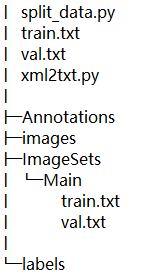

title: yolov5_real
date: 2021-07-06 14:12:37
tags:
- 加密
password: Mike
abstract: Welcome to my blog, enter password to read.
message: Welcome to my blog, enter password to read.
数据集准备
数据集的树形框架如下：

上述data文件夹中：
- Annotations: 用labelimg标注软件生成的xml文件
- images：原始图像所在文件夹（与xml文件名一一对应，除了扩展名不同）
- ImageSets: 文件夹创建一个空的Main文件夹，后续存储生成的train.txt和val.txt
- split_data.py: 生成ImagesSets/Main文件夹下的train.txt和val.txt,对应训练集和验证集
- xml2txt.py：将xml文件转换成txt文件保存至data文件夹下将新创建的labels文件夹
split_data.py
import os
import random
trainval_percent = 0.2 # 可自行进行调节(设置训练和测试的比例是8：2)
train_percent = 1
xmlfilepath = 'Annotations'
txtsavepath = 'ImageSets\Main'
total_xml = os.listdir(xmlfilepath)
num = len(total_xml)
list = range(num)
tv = int(num * trainval_percent)
tr = int(tv * train_percent)
trainval = random.sample(list, tv)
val = random.sample(trainval, tr)
ftrain = open('ImageSets/Main/train.txt', 'w')
fval = open('ImageSets/Main/val.txt', 'w')
for i in list:
name = total_xml[i][:-4] + '\n'
if i in val:
fval.write(name)
else:
ftrain.write(name)
ftrain.close()
fval.close()
xml2txt.py
import xml.etree.ElementTree as ET
import pickle
import os
from os import listdir, getcwd
from os.path import join
sets = ['train', 'val']
classes = ['single', 'cluster', 'impus', 'dubs'] # 自己训练的类别
def convert(size, box):
dw = 1. / size[0]
dh = 1. / size[1]
x = (box[0] + box[1]) / 2.0
y = (box[2] + box[3]) / 2.0
w = box[1] - box[0]
h = box[3] - box[2]
x = x * dw
w = w * dw
y = y * dh
h = h * dh
return (x, y, w, h)
def convert_annotation(image_id):
in_file = open('../data/Annotations/%s.xml' % (image_id))
out_file = open('../data/labels/%s.txt' % (image_id), 'w')
tree = ET.parse(in_file)
root = tree.getroot()
size = root.find('size')
w = int(size.find('width').text)
h = int(size.find('height').text)
for obj in root.iter('object'):
difficult = obj.find('difficult').text
cls = obj.find('name').text
if cls not in classes or int(difficult) == 1:
continue
cls_id = classes.index(cls)
xmlbox = obj.find('bndbox')
b = (float(xmlbox.find('xmin').text), float(xmlbox.find('xmax').text), float(xmlbox.find('ymin').text),
float(xmlbox.find('ymax').text))
bb = convert((w, h), b)
out_file.write(str(cls_id) + " " + " ".join([str(a) for a in bb]) + '\n')
wd = getcwd()
for image_set in sets:
if not os.path.exists('../data/labels/'):
os.makedirs('../data/labels/')
image_ids = open('../data/ImageSets/Main/%s.txt' % (image_set)).read().strip().split()
list_file = open('../data/%s.txt' % (image_set), 'w')
for image_id in image_ids:
list_file.write('data/images/%s.png\n' % (image_id))
convert_annotation(image_id)
list_file.close()
运行两个代码后，文件结构如下:

至此，数据集划分完成。
修改配置文件
在用自己的数据替换掉官方同名文件及文件夹后，打开data文件夹下的coco.yaml，
# Train/val/test sets as 1) dir: path/to/imgs, 2) file: path/to/imgs.txt, or 3) list: [path/to/imgs1, path/to/imgs2, ..]
# path: ../data/images # dataset root dir
train: ./data/train.txt # train images (relative to 'path') 118287 images
val: ./data/val.txt # train images (relative to 'path') 5000 images
# test: test-dev2017.txt # 20288 of 40670 images, submit to https://competitions.codalab.org/competitions/20794
# Classes
nc: 4 # number of classes
#: ['single', 'cluster', 'impus', 'dubs'] # class names
在models文件夹下打开yolov5s.yaml,
nc: 4 # number of classes
下载对应的预训练模型
百度网盘链接: https://pan.baidu.com/s/1klUOdDR1tIcsuhnA2fqXdw 密码: bk6r
链接：https://pan.baidu.com/s/1vlTmjNofB5kD3BOaSy4SnA 提取码：gr8v
下载的预训练模型放置weights文件夹下
环境搭建
打开早前搭建的wsl2环境，拉取pytorch/pytorch:1.9.0-cuda11.1-cudnn8-runtime，
docker pull pytorch/pytorch:1.9.0-cuda11.1-cudnn8-runtime
### 如果是在服务器上运行则是
### docker pull pytorch/pytorch:1.9.0-cuda10.2-cudnn7-devel
完成后：
docker run -it --rm --runtime=nvidia --ipc=host -v /mnt/d/yolov5-master/yolov5-master/:/workspace pytorch/pytorch:1.9.0-cuda11.1-cudnn8-runtime
进入环境后需要执行：
apt update
apt install -y wget libgl1-mesa-glx libglib2.0-dev
pip install -i https://mirror.baidu.com/pypi/simple -r requirements.txt
pip install torchvision --upgrade --force-reinstall -i https://mirror.baidu.com/pypi/simple
训练
python train.py --data data/coco.yaml --cfg models/yolov5s.yaml --weights weights/yolov5s.pt --batch-size 32 --epochs 100 --device 0
测试detect.py
假设训练结果存在runs/exp32 文件夹下：
修改detect.py
parser.add_argument('--weights', nargs='+', type=str, default='runs/train/exp32/weights/best.pt', help='model.pt path(s)')
parser.add_argument('--source', type=str, default='data/xiangyin_images', help='file/dir/URL/glob, 0 for webcam')
运行结果保存在run/detect文件夹中，可通过修改参数project和name来控制。
test.py
修改test.py
parser.add_argument('--weights', nargs='+', type=str, default='runs/train/exp32/weights/best.pt', help='model.pt path(s)')
运行结果保存在run/test文件夹中，可通过修改参数project和name来控制。
运行test.py时，可另外运行之前的代码生成test.txt和对应的labels以及ImageSets/Main下的test.txt，
import os
import random
trainval_percent = 1 # 可自行进行调节(设置训练和测试的比例是8：2)
train_percent = 1
xmlfilepath = 'Annotations'
txtsavepath = 'ImageSets\Main'
total_xml = os.listdir(xmlfilepath)
num = len(total_xml)
list = range(num)
tv = int(num * trainval_percent)
tr = int(tv * train_percent)
trainval = random.sample(list, tv)
val = random.sample(trainval, tr)
# ftrain = open('ImageSets/Main/train.txt', 'w')
# fval = open('ImageSets/Main/val.txt', 'w')
ftest = open('ImageSets/Main/test.txt', 'w')
for i in list:
name = total_xml[i][:-4] + '\n'
if i in val:
ftest.write(name)
# fval.write(name)
else:
ftrain.write(name)
ftest.close()
import xml.etree.ElementTree as ET
import pickle
import os
from os import listdir, getcwd
from os.path import join
sets = ['test']
classes = ['single', 'cluster', 'impus', 'dubs'] # 自己训练的类别
def convert(size, box):
dw = 1. / size[0]
dh = 1. / size[1]
x = (box[0] + box[1]) / 2.0
y = (box[2] + box[3]) / 2.0
w = box[1] - box[0]
h = box[3] - box[2]
x = x * dw
w = w * dw
y = y * dh
h = h * dh
return (x, y, w, h)
def convert_annotation(image_id):
in_file = open('../data/Annotations/%s.xml' % (image_id))
out_file = open('../data/labels/%s.txt' % (image_id), 'w')
tree = ET.parse(in_file)
root = tree.getroot()
size = root.find('size')
w = int(size.find('width').text)
h = int(size.find('height').text)
for obj in root.iter('object'):
difficult = obj.find('difficult').text
cls = obj.find('name').text
if cls not in classes or int(difficult) == 1:
continue
cls_id = classes.index(cls)
xmlbox = obj.find('bndbox')
b = (float(xmlbox.find('xmin').text), float(xmlbox.find('xmax').text), float(xmlbox.find('ymin').text),
float(xmlbox.find('ymax').text))
bb = convert((w, h), b)
out_file.write(str(cls_id) + " " + " ".join([str(a) for a in bb]) + '\n')
wd = getcwd()
for image_set in sets:
if not os.path.exists('../data/labels/'):
os.makedirs('../data/labels/')
image_ids = open('../data/ImageSets/Main/%s.txt' % (image_set)).read().strip().split()
list_file = open('../data/%s.txt' % (image_set), 'w')
for image_id in image_ids:
list_file.write('data/images/%s.png\n' % (image_id))
convert_annotation(image_id)
list_file.close()
docker镜像生成
docker commit 容器id 自命名的镜像名
以后直接使用生成的镜像启动容器即可。
运行以下命令开启docker
docker run -it --rm --runtime=nvidia --ipc=host -v /mnt/d/yolov5-master/yolov5-master/:/workspace pytorch/pytorch:1.9.0-cuda11.1-cudnn8-runtime###改为刚刚生成的镜像